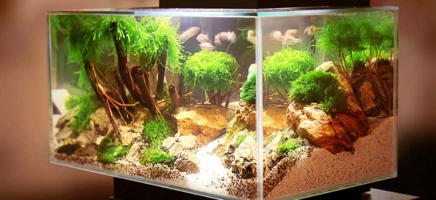

Betta tank guide
When choosing and setting up your bettas tank, there are a few strict guidelines you should ALWAYS follow. If you follow this
guide, then you will have a healthy and happy betta!

Make sure the tank has a lid! I cannot stress this enough, bettas WILL jump out of their tank if they have the chance,
and they can die. Putting on a lid can save your beutiful betta's life
The tank should be five gallons or more. Bettas are emotionally complex creatures and cramping them in a small bowl
is an inhumane and cruel thing. I won't get angry at a 4.5 gallon, of course, but try to remember, the bigger the better
⚠NO ARTIFICIAL PLANTS⚠ Plastic plants can tear your bettas delicate fins and can cause an infection. Instead, try live
or silk plants. You may think that aquatic plant care is hard, but is actually as easy as owning a cactus! My personal
favorite is java fern!
Always have a filter! On top of making it easier to mantain crystal-clear water, filters can prevent ammonia buildups,
boosts the tanks nitrogen cycle, and keeps clean water flowing into the tank
No rainbow colors! Pink, blue, and other colors that are not naturally found in a bettas enviroment can stress out
your fish. (I'm talking about bright, neon colors. Not pastel or other dull or natural tones)
Use cheap driftwood or natural looking decor in your tank instead of big, extravagant tank decorations that don't provide
hiding spots